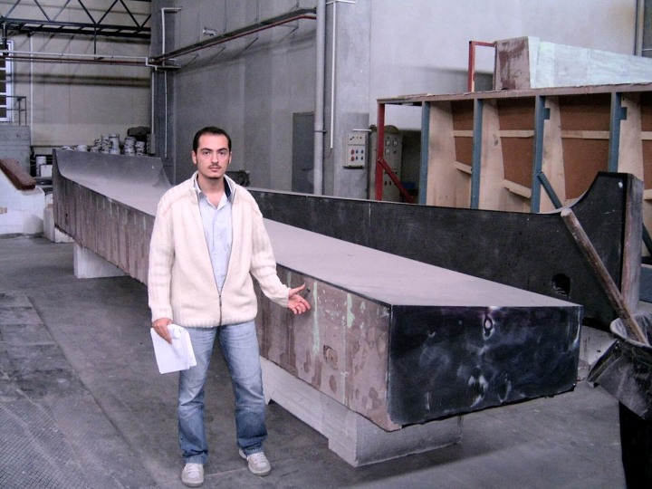

|
CAM uygulamalarý için PowerMILL'i seçmenizin sebebi nedir? VektorWorks hakkýnda bilgi verir misiniz?
Erdal Kýlýç: Biz CNC tezgaha sahip olduðumuzdan beri de PowerMILL kullanýyoruz. Tezgah üreticisi bu programý tavsiye etti ve biz de alternatif bir arayýþa girmedik zaten. PowerSHAPE ve PowerMILL birlikte kullanýldýðýnda ayný anda hem CAD hem de CAM ihtiyaçlarýmýzý karþýlýyor.
Bence VektorWorks, AutoCAD'e göre daha kullanýþlý program. VektorWorks (www.nemetschek.net) üç boyutlu bir modelleme programýdýr. Ne yazýk ki Türkiye'de çok az kiþi bilir bu programý. Amerikan menþeli ve çok süratli bir program. En güzel tarafý, bu programla her türlü formatta gelen modeli açýp görüntüleyebiliyorum.
Teknedeki kompozit malzeme kullanýmýndan bahseder misiniz?
Erdal Kýlýç: Teknede çoðunlukla cam elyafý kullanýlýyor. Bazý bölgelerde ihtiyaca göre karbon elyafý ve Kevlar (Aramide) da kullanýlýyoruz. Kullanýlan reçine miktarýný en aza indirebilmek, tekneyi hem hafif hem de saðlam yapabilmek için reçineyi vakum altýnda elyafa emdiriyoruz. Vakum infüzyon (Vacuum Infusion) isimli bu tekniði baþarýyla uygulayan Dünya'daki sayýlý tekne üreticilerinden birisiyiz. Kendimize göre belli açýlardan bu tekniði daha da geliþtirdik. Kompozit uçak parçalarýnýn imalatýnda kullanýlan tekniði biz burada tekneler için uyguluyoruz.
Tabii, bu elyaflarýn miktar ve yönünün doðru belirlenmesi de teknenin mukavemeti ve hafifliði açýsýndan çok önemli. Bu konuda, elyaf takviyeli kompozit malzemelerin analizinde uzmanlaþmýþ yurt dýþýndaki bir firmadan danýþmanlýk ve tasarým desteði alýyoruz.
Türkiye'de FEA konusunda uzman ve dýþarý mühendislik hizmeti veren bazý firmalar var. Kompozit malzeme tasarýmý ve analizi konusunda onlarla hiç çalýþmayý düþünüyor musunuz?
Erdal Kýlýç: Tabii ki düþünüyoruz. Ama biz aramýyoruz, onlarýn bizi bulmasýný bekliyoruz.
CNC tezgahýnýz hakkýnda bilgi verir misiniz?
Erdal Kýlýç: Freze tezgahýmýzýn 12,5 x 8 x 4 metre boyutlarýnda çok büyük bir çalýþma alaný var. Bu yönüyle CNC tezgahýmýz sadece Türkiye'nin deðil Avrupa'nýn sayýlý tezgahlarýndan birisi.
CNC tezgahýmýz CMS firmasý tarafýndan Ýtalya'da üretiliyor (www.cms.it). Geçen yýl sipariþ verdik, bize bul geldi. Fiyatý 1 Milyon USD civarýndadýr.
Tezgahý hangi iþlerde kullanýyorsunuz? Kapasitesini doldurabiliyor musunuz?
Erdal Kýlýç: Biz bu tezgahta kalýp da parça da üretiyoruz. Kendimize uygun yöntemlerle kalýplar üretiyoruz. Herkesin bir yoðurt yiyiþi var misali biz kendimize özgü çeþitli teknikler kullanarak çeþitli ürünler oluþturuyoruz. Tezgahýn tam kapasitesini bu aralar kullanýyoruz.
Bu tezgahla dýþarýya da hizmet veriyor musunuz?
Erdal Kýlýç: Tabii biz dýþarýya hizmet veriyoruz. Ufak tefek iþ de yaptýk. Teklifler geliyor. Tabii buna olgun ve hazýr müþteri olmasý lazým. Bu tezgahýn önemini anlayan bir müþteri olmasý gerekiyor. Tabii bu tezgah metal kesen bir tezgah deðil. Sadece hafif metalleri keser. Daha çok yumuþak malzemeyi keser. Köpük olabilir, ahþap olabilir. Bu tezgahý kullanacaklarýn sadece bunun maliyetini düþünmemesi lazým. Tezgahta hangi iþte hangi malzemenin kullanýlacaðý da çok önemli. Yanlýþ malzeme kullanýlýrsa hem zaman hem de para kaybý oluyor...
Bu kadar büyük kapasiteli ve hassas çalýþan özel bir tezgahta ne gibi sorunlar yaþadýnýz?
Erdal Kýlýç: Biz tezgahý alýnca iki hafta sonra sürekli arýza yapmaya baþladý. Çok uðraþtýk. Ýtalya'dan ustalar geldi. Sonunda nereden çýktý biliyor musunuz? Akþam üstü tezgahýn bir kenarýna gelen güneþ ýþýðý raylardan birisine yansýyordu. Raylarýn ýsýnma sonucu gevþemesiyle birlikte ray kendisini "off"a çekiyordu. Burada cetvelleme sistemi lazerle. Burada tezgahta mekanik cetvel kullanamýyorsunuz. Lazerin ise hassasiyeti tahmin edemeyeceðiniz bir boyutta.
Büyük hacimli CNC freze tezgahý:
CMS tarafýndan Ýtalya'da üretilen POSEIDON modeli CNC freze tezgahý, 12,5 metrelik parçalarý tek seferde iþleyebilmesi itibariyle Türkiye'nin en büyük Avrupa'nýn ise sayýlý büyük ölçekli tezgahlarý arasýndadýr. Numarine, böyle büyük bir tezgaha ihtiyacý olan baþka firmalara da hizmet verebiliyor. Tezgahýn eksenel hareketi lazer mesafe bulucularla ölçülerek çok hassas bir þekilde kontrol ediliyor. Fakat sonucun baþarýlý olabilmesi için iþlenen malzemenin ýsýl genleþme katsayýlarýnýn dikkate alýnmasý büyük önem taþýyor.
CNC imalat Md. Karl Heinz Mula çok iyi Türkçe biliyor.
CNC freze tezgahý fabrika binasýnýn bir köþesine hazýrlanmýþ özel bölgede iþletilmektedir. Bu tezgah, ahþap, köpük, epoksi reçine, gibi sert olmayan malzemelerin iþlenmesinde kullanýlmaktadýr.
Tezgah, nadiren alüminyum malzeme iþlemekte de kullanýlabilmektedir.
Tezgahta metrelerce boyda parçalar iþlenebildiði gibi yüksek hassasiyetle küçük parçalar da iþlenebilmektedir. Resimde PU veya PS köpük üzerine uygulanmýþ sert Termoset plastik tabaka iþlenirken görülüyor

Tezgahta 12,5m boya kadar parçalar tek seferde iþlenebilir.
102' RPH modeline ait kalýp parçalarý birleþtirildikten sonraki bir tekne inþa aþamasý
Baþka eklemek istedikleriniz de var mý?
Erdal Kýlýç: Evet; Yüksek yazýlým lisans bedelleri konusunda bir þeyler söylemek istiyorum: Türkiye'deki firmalar güçlü kuruluþlar deðil. Biz bile bir çok kere lisans yazýlým ücretlerinde çok zorlanýyoruz. Çok büyük paralar ödeniyor bu programlara. Bir yazýlým için 30-40 bin dolar para istiyorlar. Ondan sonra diyorlar ki 'Biz bunlara akýl patlatýyoruz, ekip çalýþtýrýyoruz, bunlarýn karþýlýðýný almamýz lazým.'
Yalnýz, bildiðimiz gibi, birçok firma da bu pahalý yazýlýmlarý lisansýz kullanýyor. Neden? Çünkü ülkemizdeki firmalarýn bu parayý ödeyecek gücü yok.
Fakat bu pahalý yazýlýmlarý üreten ülkeden (ABD) bir müþteri, Türkiye'ye gelip bir tekne almak istediðinde fiyatlarýn yüzde 10 daha ucuz olduðunu görüyor. Yüzde 10 daha ucuz olmasýna raðmen "Siz ikinci sýnýf bir ülkesiniz, fiyatlar sizde daha da ucuz olmalý" diyor. "Sizin adamlarýnýz ucuz çalýþýyor. Sizin bunlarý yüzde 30 daha ucuza vermeniz gerekir" diyorlar. Yani sen geliþmekte olan bir ülkeden olduðun için, adýn John deðil de Ahmet olduðu için, sadece bu sebepten ötürü ürettiklerimizin ucuz olmasý gerektiðini söylüyor. Senin kaliten daha iyi olmasýna raðmen malýnýn çok ucuz olmasýný istiyorlar.
Eðer sen benden yarý yarýya istiyorsan, bana da yazýlýmý yarý fiyatýna vermen lazým. Sen bana 50 bin dolarlýk bir program satýyorsun, ben de buradaki mühendislerimin emeðini aldýðým 50 bin dolarlýk programla deðerlendiririm. Bizim Avrupa ile mühendislik açýsýndan hiçbir farkýmýz yok. Hiçbir akýl farklý yok. Sadece sistematik farký var. Ýnsan kaynaklarý olarak bizden kesinlikle üstün deðiller. Bunu her ortamda tartýþýrým.
Bakýn bu programlarý Türkiye'de yarý fiyatýna satsalar, lisanssýz kullaným davalarýndan dolayý avukatlara verdikleri paradan daha fazla para kazanýrlar.
|